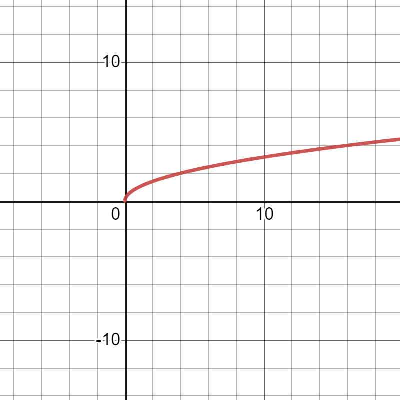

The 'x' values that a function can be take can be thought of as the 'inputs' to a function. For example, in the function f(x) = 2x, x=5 would be an input, which would give some output value(in this case 10).
As the domain of a function f(x) was defined as the set of valid inputs, the range of a function is defined as the set of valid outputs, meaning all of the possible outputs that a function can give.
Using the example for the domain, the input x=5 in f(x)=2x would give an output of 10, which we can say belongs to the range of f(x), as it is a valid output.
Examples:
Find the domain and range of the function f(x)=√x
To find the domain, we need to determine what values of x are valid.
We can see that the x in f(x) is under a square root symbol, meaning that x must be ≥ 0.
There are no more restrictions on the value of x, so our domain is that x ≥ 0.
We can use this information to determine the range of f(x). To determine the range, we will want to find the smallest possible output of f(x).
In this case, the value x=0 gives the smallest output, giving √0=0.
We will then need to find the largest possible output of f(x). In this case, there is no definitive max value, because x can keep getting bigger and bigger, and the output from f(x) will get bigger and bigger.
Therefore, our range of output values is only limited by a smallest value. This means that our range is y ≥ 0.

As we can see from an image of the graph of f(x), there are no points where x<0, and there are also no points where y<0.
Practice:
Find the domain and range of the following functions:
1. f(x)=x2
2. f(x)=1/x
3. f(x)=√x+1
4. f(x)=9x+7
5. f(x)=9